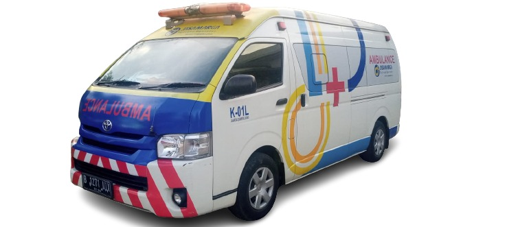
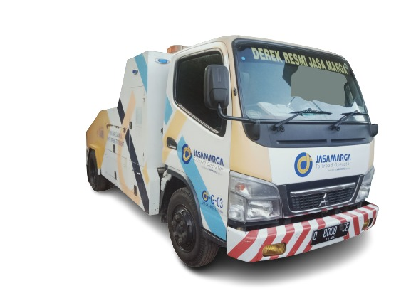
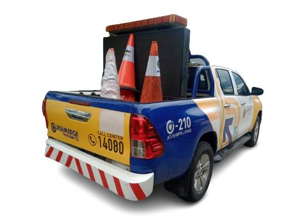
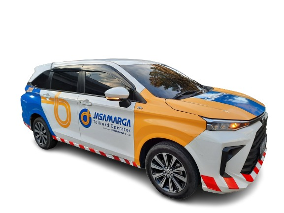
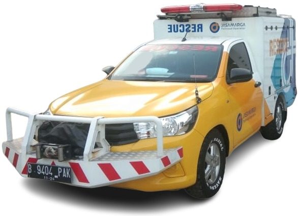

Ambulance
Layanan ambulans 24/7 untuk pertolongan medis darurat di jalan tol dengan tim medis profesional dan peralatan lengkap. Dilengkapi dengan teknologi komunikasi canggih untuk koordinasi cepat dengan rumah sakit terdekat.
- Layanan 24 jam setiap hari
- Tim medis bersertifikat
- Peralatan medis lengkap
- Respons time cepat

Derek
Layanan derek untuk evakuasi kendaraan bermasalah dengan armada yang siap siaga di berbagai titik strategis jalan tol. Dilengkapi dengan peralatan derek modern untuk berbagai jenis kendaraan.
- Armada derek modern
- Operator berpengalaman
- Tersedia di titik strategis
- Untuk semua jenis kendaraan

Mobile Customer Service
Kendaraan mobile customer service yang menyediakan layanan informasi dan bantuan kepada pengguna jalan tol. Dilengkapi dengan fasilitas komunikasi modern untuk memberikan dukungan langsung di lapangan.
- Layanan customer service mobile
- Informasi lalu lintas real-time
- Bantuan teknis kendaraan
- Koordinasi layanan darurat

Kamtib (Keamanan dan Ketertiban)
Layanan keamanan dan ketertiban untuk menjaga keamanan pengguna jalan tol dan aset infrastruktur. Tim security profesional yang berpatroli 24 jam untuk memastikan keamanan di sepanjang ruas tol.
- Patroli keamanan 24/7
- Monitoring CCTV terpusat
- Koordinasi dengan Polisi
- Pengamanan aset infrastruktur

Rescue
Tim rescue profesional untuk penanganan kecelakaan dan situasi darurat dengan peralatan modern dan terlatih. Siap menangani berbagai jenis kecelakaan dan situasi emergency di jalan tol.
- Tim rescue terlatih
- Peralatan rescue lengkap
- Penanganan kecelakaan cepat
- Koordinasi multi-instansi